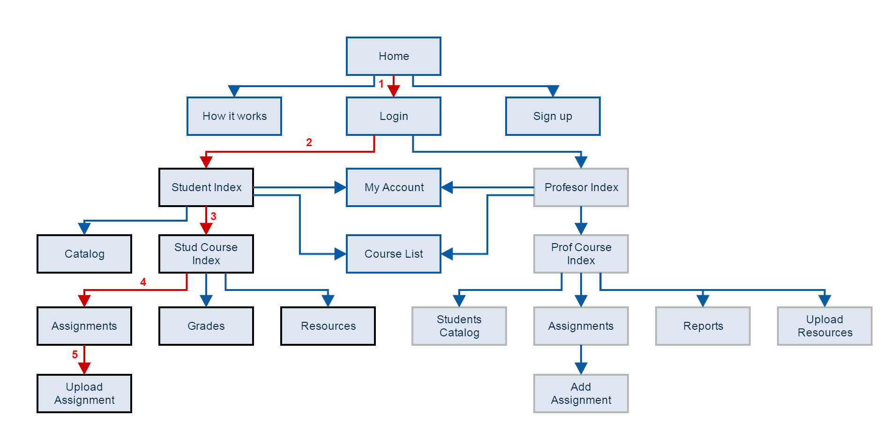

Ghidul de utilizare a aplicatiei

Online Assignment Manager este o platformă de e-learning ce ajută studenții și profesorii prin simplificarea modului în care primesc, vizualizează, rezolvă respectiv punctează temele și proiectele aferente unei materii sau unui curs online.
Mod de funcționare:
Student
- studentul se loghează în contul său, își creează unul dacă nu are
- studentul se înscrie la toate cursurile la care dorește să participe, în principiu la toate ce aparțin de facultatea sa, plus alte cursuri opționale create de persoane și făcute publice
- vizualizarea resurselor disponibile și a temelor de rezolvat
- uploadarea temelor în limita termenului stabilit
- vizualizarea catalogului cu note la fiecare obiect
Profesor
- după logare, profesorul poate intra pe pagina fiecărui curs la care activează
- pentru fiecare curs, poate publica assignment-uri cu deadline-uri stabilite sau edita lista de resurse disponibile
- vizualizarea assignment-urilor trimise la timp de către studenți
- după evaluarea assignment-ului, introducerea notei pentru acea temă
Scopul principal al aplicației web este centralizarea tuturor datelor pentru studenți și profesori ce sunt necesare în procesul de învățare și evaluare. Așadar, studentul își poate urmări progresul pentru toate materiile la care participă, iar profesorul are la îndemână rezolvările și un mod simplu de publicare a punctajelor.